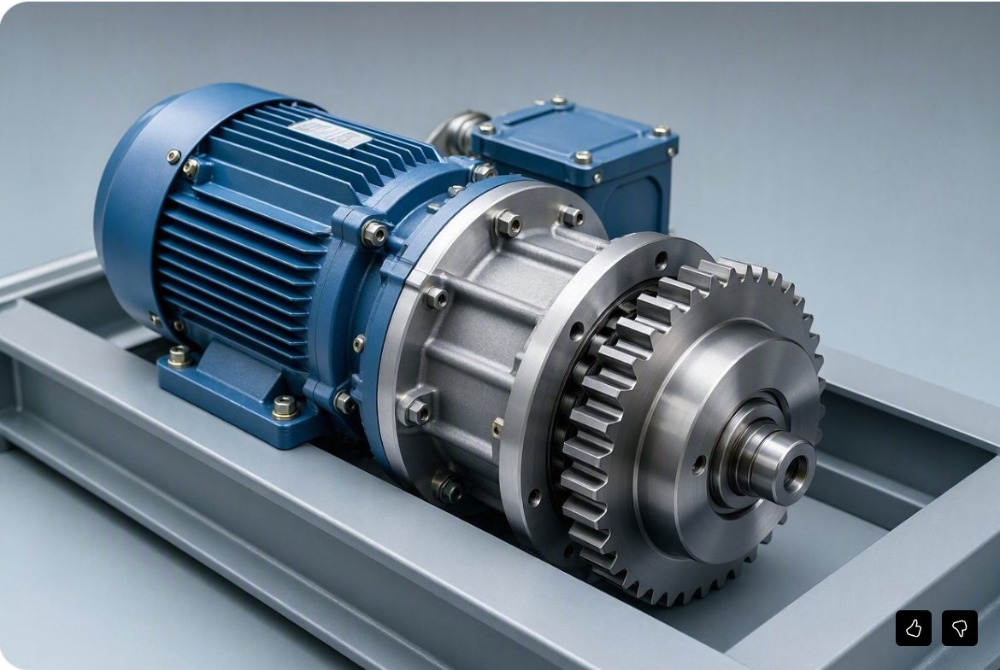

On demand, the TESS Organic Rankine Cycle turbine turns stored heat back into clean, dispatchable electricity — peak shaving, load leveling, and more megawatt-hours from fuel you already burned.
Representative planning models — every engagement starts with a site-specific heat/mass balance so you get real numbers, not a brochure.
| Metric | Modeled impact |
|---|---|
| Fuel saved | 335,000–478,000 tonnes of coal per year |
| Added output | +1.47–1.84 million MWh per year |
| Cooling water saved | 10.3–15.5 million m³ per year (~2.7–4.1 billion gallons) |
| Metric | Modeled impact |
|---|---|
| Gas saved | 29.8–42.6 million SCM per year |
| Added output | +438,000–547,500 MWh per year |
| Cooling water saved | 0.66–1.10 million m³ per year (~174–289 million gallons) |
Harvesting heat before it becomes cooling burden cuts cooling-tower energy 20–30%.
The same storage-and-shift approach reduces data-centre cooling energy 20–30%.
TESS before the turbine inlet holds air near ISO 15°C in hot climates — recovering lost capacity fast. A 200 MW pilot models +63–66 GWh/year.